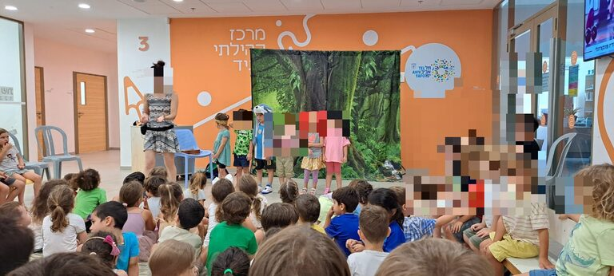
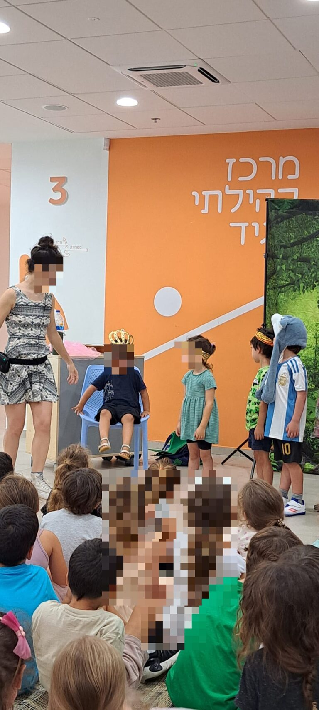
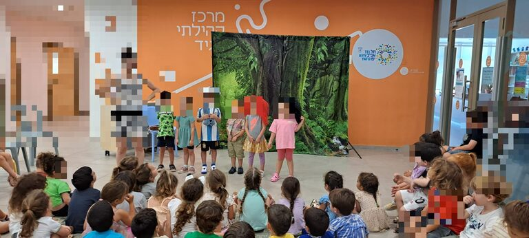
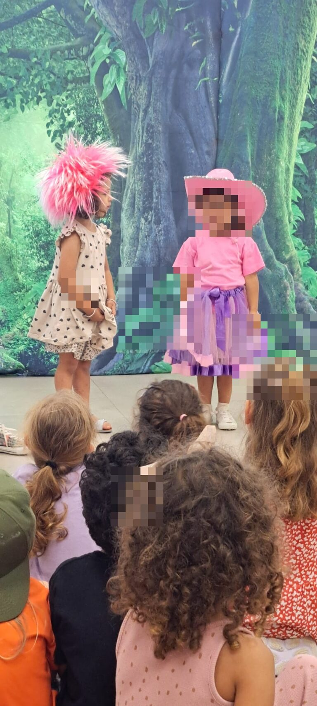
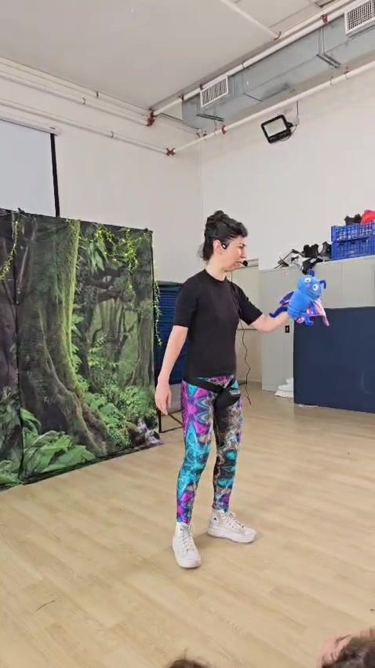

מי אני
"מה את עושה פה?!"
הזמן הוא זמן מלחמה, 2023. ואני? עוברת ממרכז חוסן אחד לאחר מצוידת באוזניות צבעוניות, מוסיקה טובה וארגון מקסים שאפשר לי לחלוש את הארץ לאורכה ולרוחבה ולהפיץ רגעים של נחת וחיבור בתוך מציאות כל כך מורכבת.
באותו היום הובלתי מסיבת אוזניות גדולה במרכז הקהילתי "המגיד" בתל אביב. איפשהו בין אנה זק לנונו אני רואה פרצופים קטנים, חמודים ומאוד מוכרים רצים אליי. "רימההההההההה" נשמע מכל עבר. מהר מאוד הברכיים שלי מתחילות לקרוס תחת החיבוקים.
מאחור אני מזהה את מריה, מריה מאשכול בן יהודה בו שנתיים קודם לכן העברתי סדנאות תיאטרון דרך חברה מתוקה. מריה שהתעקשה על בלעדיות. "רוצים רק את רימה" (כמה זה מחמם את הלב).
"מה את עושה פה?!" היא שאלה.
ואז, כמו בכל סרט טוב, רצנו אחת אל עבר השנייה לחיבוק גדול שאחריו הגיעה הזמנה גדולה. בואי אלינו!
וככה חברים, נולד תיאטרון "סיפורימה". מפה לאוזן, מגן לגן, מאולם לאולם. כל הידע שאספתי במהלך השנים זוקק למותג מתוק בו אנחנו זוכים לבנות עולמות שלמים, לצחוק, להתרגש, להעמיק ולהתחבר. זאת המתנה שלנו, ואנחנו כל כך שמחים לחלוק אותה.
הצגת סיפורימה — איך הקסם קורה?
בהצגה רגילה הילדים יושבים ומסתכלים. אצלי הם נכנסים לתוך הסיפור — יש להם תפקיד, יש להם טקסט, יש להם רגעים שבהם הם מחליטים מה קורה הלאה.
ההצגה פותחת בהיכרות קצרה, עוברת לסיפור שהילדים הם דמויות בו, ונגמרת בשיחה קצרה — מה למדנו, על מה רצינו לשאול. זה לא שיעור, וזאת לא "הפעלה". זה תיאטרון שבנוי כך שהילדים לא צופים בו — חיים אותו.
אני מגיעה עם הציוד, עם התלבושות ועם הסיפור. המקום שלכם — גן, מתנ"ס, סלון — נשאר כמו שהוא, רק שבמשך שעה הוא הופך לעולם אחר.
חמשת הערכים שלי
-
העצמה
לתת לילד את הרגע שבו הוא מבין: הקול שלי שווה משהו בסיפור הזה.
-
שיתוף פעולה
הסיפור לא קורה בלי כולם. חלק מהילדים עולים לבמה כדמויות, חלק יושבים בקהל ומשתתפים משם — ולשניהם יש מקום חשוב בסיפור. אף אחד לא מיותר.
-
טוב לב
דמויות שמתנהגות יפה זו לזו מלמדות יותר ממאה הוראות של מבוגר.
-
אומץ
אומץ לא מגיע בלי פחד — הוא מגיע יחד איתו. היופי הוא לתת לשניהם להתקיים, ולא לתת לפחד לעצור אותנו.
-
נתינה
כל פעולה או נותנת כוח לעולם או לוקחת ממנו. מחמאה, חיבוק, מילה טובה — נותנים. ככל שנותנים יותר, מקבלים יותר.
הצגות מקור בשיתוף הקהל
סדרות הצגות למרכזים קהילתיים, גנים וספריות — גילאי 4-7
אני כותבת את הסיפורים בעצמי. לא עיבוד, לא תסריט-מדף — עולם שלם שנולד בשביל הקהל הספציפי הזה. ההצגה עצמה כ-45 דקות, ואחריה זמן לשיחה קצרה וצילומים — בסך הכל כשעה.
חלק מהילדים עולים לבמה כדמויות, והשאר יושבים בקהל ומשתתפים משם ברגעים מסוימים. אני בונה את ההצגה כך שלכל ילד יש מקום ותחושה של שייכות, גם אם הוא לא עולה לבמה.
סדרה של 3 או 5 מפגשים ומעלה בונה משהו שאין במופע בודד. הילדים לומדים להכיר אותי, מעיזים יותר, והקהילה סביב הגן או המתנ"ס רואה את ההתקדמות שלהם לאורך זמן. זאת הסיבה שהמחיר למפגש יורד ככל שהמחויבות לסדרה עולה.
מסלולי תמחור — בהתאמה לסדרה שלכם
| מסלול | מחיר למפגש |
|---|---|
| הצגה בודדת | 1,200 ₪ |
| סדרה של 3 מפגשים | 1,100 ₪ למפגש |
| סדרה של 5 מפגשים ומעלה | 1,000 ₪ למפגש |
כל המסלולים כוללים ציוד, הגעה (גוש דן), ותיאום תוכן מקדים עם רכזת הגן/הקהילה.
לקבלת הצעה מותאמת — דברו איתי בוואטסאפהצגה פרטית לאירוע שלכם
מגוון הצגות בהתאמה אישית לאירוע שלכם — יום הולדת, מסיבת גן או כל רגע משפחתי שמגיע לו סיפור משלו. מתאים לגילאי 4-7.
הצגה אישית, בביתכם או באולם קטן — במקום שהילד או הילדה הם באמת דמות בסיפור, לא רק האורח שחוגג. אני מגיעה עם הסיפור, עם הציוד, ועם שם הילד/ה בתוך העלילה. זאת הצגה — לא הפעלה.
לתיאום תאריך — דברו איתי בוואטסאפגלריה
תמונות מהמפגשים — בקרוב יתווספו תמונות איכותיות מהשטח.





מה אומרים אחרי שהיינו אצלם
"מקצועית, יצירתית ומלאת תשוקה, מעבירה את אהבתה לתיאטרון לילדים בצורה מרתקת. מצליחה להגיע אל לבם של הילדים, להעשיר את דמיונם ולפתח את ביטחונם העצמי."
"יצירתיות מרשימה ויכולת להתחבר לילדים באופן מעורר השראה, לרבות ילדים המתמודדים עם צרכים מיוחדים. מחויבות יוצאת דופן."
"הרגישות שהיא מביאה איתה, גורמת לילדים להרגיש בנוח לבטא את עצמם. הם מחכים לה בציפייה מרובה מידי שבוע."
שאלות נפוצות
כמה זמן אורכת ההצגה?
ההצגה עצמה כ-45 דקות. מעבר לזה יש זמן לשיחה קצרה ולצילומים עם מי שרוצה — בסך הכל בערך שעה.
לאיזה גילאים זה מתאים?
ילדים בגילאי 4-7. זה הטווח שבו הילדים כבר יכולים להיות דמויות פעילות בסיפור, ועדיין פתוחים לעולמות דמיוניים בלי ציניות.
כמה ילדים יכולים להשתתף?
ההצגה מתאימה לקבוצות החל מ-10 ילדים ועד 200 ילדים. אני בונה את המבנה בהתאם לגודל הקבוצה.
איזה ציוד צריך להכין מראש?
שטח נקי לילדים לשבת, חצי חדר פנוי לתנועה, ושקע חשמל. את כל השאר — תלבושות, אביזרים, מוזיקה — אני מביאה.
איפה זה מתאים להתארח?
גן, מתנ"ס, ספריה, בית ספר, או סלון של משפחה לאירוע פרטי. כל מקום שבו יש קצת שקט וילדים שיכולים לשבת במעגל.
מה לגבי תשלום?
אחרי שיחה ראשונית אני שולחת הצעת מחיר מסודרת.
איפה בארץ את עובדת?
סיפורימה פועלת בעיקר ב[אזור שירות — ממתין לניסוח]. לאזורים אחרים — אפשר, תוספת נסיעה נסגרת בשיחה.
יצירת קשר
הדרך המהירה ביותר — וואטסאפ. אם אתם מעדיפים, אפשר גם למלא את הטופס ואני אחזור אליכם.
דברו איתי בוואטסאפ